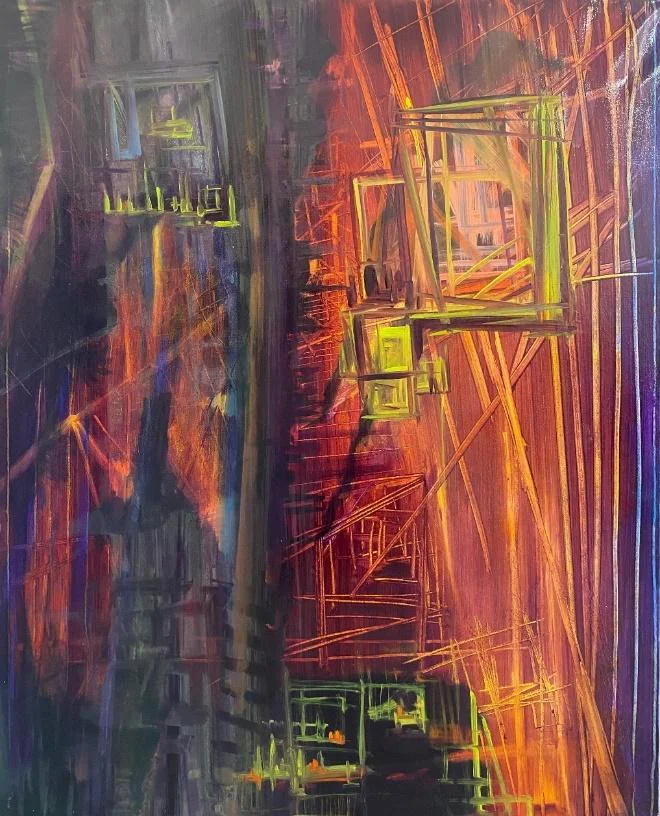
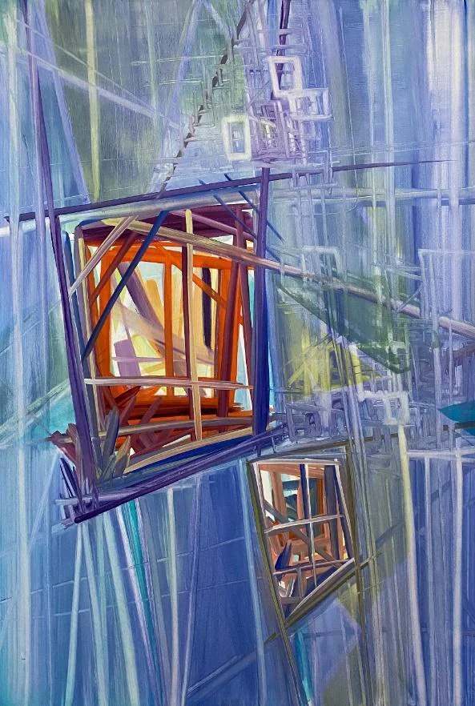
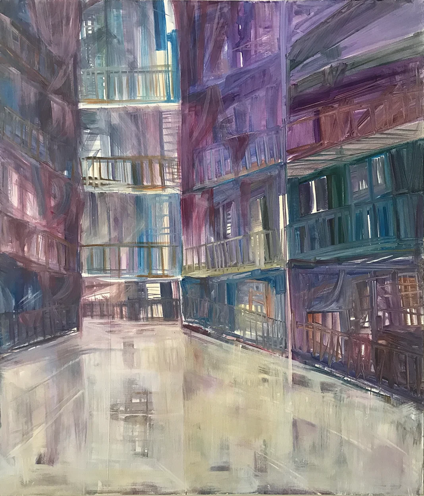

FEATURED / 00
00:32 · SHOWREELVideo Portfolio Showreel
A short introduction to painting, visual structure and experimental motion.
An exploration of color, perspective and architectural space through original paintings and experimental video studies.

Original artworks reimagined through sequences, movement and color.
SCROLL TO EXPLORE ↓Four video demonstrations created from Dila Yıldırım’s original artworks. These pieces explore framing, pacing, graphic movement and color relationships.
Perspective, layered architecture and color translated into a moving sequence.
00:36Graphic overlays and repeated frames exploring geometry, direction and rhythm.
00:24Original artworks compared with illustrative color adjustments to study attention and mood.
00:24Production note: These videos are demonstration edits assembled from the artist’s original paintings with digital animation and sound assistance. They are not live-action footage or evidence of independently completed professional client editing work.
The original paintings provide the color, shape and spatial language for the motion studies above.



Dila Yıldırım is a visual artist and educator with a bachelor’s degree and a master’s degree in Painting from İnönü University. Her practice and research focus on painting, visual perception, art history, composition and the relationship between architecture and pictorial space.
She has more than seven years of experience in visual arts education, including drawing, painting, perspective and portfolio development. These video studies extend her interest in visual communication into experimental movement and color analysis.
Let's connect